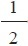
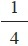
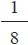
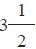
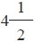
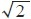

1663年的冬天，法国朝臣塞缪尔•索比耶出席了新成立的科学学院——位于伦敦的伦敦皇家学会的一次会议。皇家学会的秘书亨利•奥登伯格是个备受尊敬的人。他告诉与会者，索比耶是从内战的黑暗日子中一路走来的朋友，那时，他们的国王被赶出了英国，在巴黎成立朝阁。现在，查理二世已经在伦敦复辟，他重新登上王座已经有三年时间，奥登伯格很自豪能够在自己的祖国款待他的老朋友，并与他一起分享在伦敦皇家学会领导下所取得的令人振奋的新的研究成果。在接下来的三个月里，索比耶走遍了英国，拜访政治领袖以及领先的资深学者，包括觐见国王本人。在此期间，这位社交广泛的法国人把伦敦皇家学会当成了自己的家，出席学会的各种会议并与会员们交往。皇家学会的会员们尽其所能地待他以最高礼遇，并授予了他最高荣誉：伦敦皇家学会会员。
索比耶是否配得上这项荣誉是值得商榷的。虽然他是当时那个年代的著名医师，同时也是一位卓有成就的学者，但即便是他本人，也并不认为自己是一名原创型的思想家。按他自己的说法，他是一名“吹鼓手”，而不是一个“学术战场”上的“战士”，他不是宣扬自己的思想，而是通过他广泛的人际关系网络，传播其他人独创性的发明。可以肯定的是，这确实是一张令人赞叹的人际网，它包括在法国的一些最伟大的科学家，如马兰•梅森（Marin Mersenne，1588—1648）和皮埃尔•伽桑狄（Pierre Gassendi），以及在意大利、荷兰共和国和英国的一些哲学家和科学家。
索比耶属于在知识界众人皆知的那类人，一直到现在都是如此，尽管不一定值得那么多的尊重，但人们也都知道他。然而，他的雇主却更加值得关注，索比耶实际上是托马斯•霍布斯的密友兼法语翻译。但在大多数皇家学会会员的眼里，霍布斯不仅是个危险人物，而且是国家的威胁。
如果皇家学会的当权者宁愿忽略他与霍布斯的关系，也要邀请他加入他们的圈子，那么这其中的原因很简单：索比耶是个风头正劲的人物。1650年，历经多年的荷兰流亡生涯之后，他回到了法国，并且在4年之后放弃了自己的新教信仰转而信奉天主教。当时正是新教徒在法国的地位变得越来越岌岌可危的时候，这种转变无疑是一个明智的选择。索比耶成为枢机主教马萨林（Mazarin，同时也是路易十四的宰相）的门徒，并进入了国王的权力核心。他被授予了退休金以及皇家历史学家的头衔，他试图利用自己作为一个高位重臣的影响力在法国建立科学学院。他的英国之行在某种程度上是为了研究伦敦皇家学会，从而确定是否可以借鉴其经验以回国建立一个类似的学术机构。对于羽翼未丰的伦敦皇家学会的创建者们来说，由于他们始终在寻找资助者和捐助者，因此，索比耶这位来自路易十四华贵宫廷的使者，当然会得到无微不至的关照。
如果奥登伯格和伦敦皇家学会的会员们曾对索比耶抱有过希望，认为授予了他最高的荣誉，就可以得到相应的回报，那么他们很快就会感到失望了。在索比耶回国仅仅数月之后，他就这次英国之行发表了一篇报告，从中可以看出他对最近拜访的这个国家并没有多少感激之情，这令之前招待他的主人们感到震惊。在索比耶看来，英国饱受着过度的宗教信仰自由以及过度的“共和精神”之苦，这两者都不利于建立英国国教和树立皇家权威。索比耶写道，在众多的教派之中，官方的英格兰教会可能是最好的一个，因为“它的等级制度能够使人们对最高统治者保持尊重，同时这种等级制度也是对君主政体的一个有力支撑”。但其他教派——长老会派、独立派、贵格派、苏西尼派、门诺会派，等等——都是过度宽容的结果，不应该存在于这个和平的王国里。
公平来讲，索比耶确实对伦敦皇家学会有过盛情的赞誉，在他的言语之间，对由皇家学会领导进行的实验以及其成员之间的文明辩论充满了钦佩。他甚至预言道，“如果伦敦皇家学会开展的学术项目在以后不会以某种方式搁浅的话”，那么“我们将会看到，全世界的人都会对如此出色的学术团体致以赞赏和钦佩”。但是，索比耶在报告中的奉承之言可以说是寥寥无几。他声称，皇家学会在两名法国哲学家勒内•笛卡尔（René Descartes）和伽桑狄之间分为两派。这种观点在爱国情感和原则操守方面都冒犯了英国人。令伦敦皇家学会引以为豪的就是只注重自然规律，避免任何系统化的哲学。索比耶还侮辱了皇家学会的资助人克拉伦登伯爵（Earl of Clarendon，同时也是查理二世的宰相），他在报告中写道，他懂得一些法律程序，但仅此而已，并且“没有文学知识”。对于数学家约翰•沃利斯——皇家学会的创建者和领军人物之一，索比耶写道，他的相貌会令人发笑，而且还有口臭，简直是“有毒地交谈”。按索比耶所说，沃利斯唯一的希望就是通过“伦敦宫廷的空气”得到净化。
然而，对于皇家学会的死敌，同时也是沃利斯个人的敌人托马斯•霍布斯，索比耶给予的却只有赞誉。他写道，霍布斯是一个温文儒雅而且“华贵”的人，他是“皇室成员”真正的朋友，尽管他有着新教徒的成长经历。此外，索比耶声称，霍布斯是已故的英国大法官和新科学先知——杰出的弗朗西斯•培根爵士的真正继承人。在伦敦皇家学会的显贵们看来，这最后的内容是索比耶最过分的冒犯。培根是皇家学会倍加崇敬的人物，这不仅因为他的指引精神，更是因为他的守护神地位。把培根的衣钵赐予霍布斯这样一个在皇家学会经常被称为 “马姆斯伯里的怪物” 注2 的人，这显然是无法容忍的。皇家学会的历史学家托马斯•斯普拉特对索比耶进行了彻底反驳，他写道，拿霍布斯与培根做比较，就如同拿 “御车夫与圣乔治 注3 ”做比较一样，两者根本无法相提并论。
最终，索比耶为他对英国的忘恩负义付出了高昂的代价。索比耶可能没有理会斯普拉特从遥远的伦敦抛出的侮辱性言论，但他不能忽视巴黎皇家宫廷因此产生不悦所带来的严重后果。法国当时正与英国结盟，进行着对抗荷兰共和国的战争。路易十四肯定不愿意看到，由于自己国家的朝臣而与一个有用的盟国产生外交上的摩擦。路易十四迅速剥夺了索比耶作为皇家历史学家的头衔，并将他驱逐出宫廷。尽管对他的这项驱逐法令在几个月后就被解除了，但索比耶的境遇已经难以同日而语。他曾多次试图再次讨好英国国王，但无功而返。之后，他前往罗马寻求教皇的庇护。索比耶于1670年去世，最终也未能恢复其在英国之行前夕所享有的地位和威望。
尽管就索比耶的职业生涯而言，他也许是生不逢时的，但他的《英国之行》（A Voyage to England ）从许多方面都体现出了作为一位法国朝臣所应该持有的观点。他毕竟是路易十四的朝臣，法国国王的首要职责是在法国建立君主专制政权。而路易十四的统治理念由他所说的（可能是杜撰的）“我就是国家”（L’état c’est moi）这句名言完美诠释了。在17世纪60年代，路易十四迅速地将国家权力集中到皇室手中，这就很好地保证了建立一个单一信仰的国家，这一过程随着1685年完成对新教胡格诺派的驱逐而结束。如果法国宫廷的雄心在于建立一个“一个国王，一部法律，一种信仰”（“un roi，une loi，une foi”）的国家，那么索比耶在英国当然是看不出这种迹象的。英国人虽然有效地抑制了真正的天主教无穷小INFINITESIMAL 但他们没能成功地做到用一种单一宗教取代天主教。由于存在着大量的教派，破坏了现有的英国国教，从而损害了英国国王的权威。一些在内战期间曾提出过危险的共和主张的要员们，现在同时占据了教会和国家中的重要位置，而霍布斯由于是一个坚定的保皇党人，他的理念是支持“皇室成员”，因此他被边缘化了。
英国人对个人礼仪的重视程度可以说是超乎想象的。在法国，宫廷社会的身份是最高社会地位的象征，所有那些有政治抱负的人都渴望能够跻身其中。这个具有排他性的社交圈子有着独特的特征，包括他们时尚的装束和优雅的举止，所有这些都是为了使他们能够与这个社交圈子之外的人区分开来，从而建立他们的社交优势。但是，索比耶的英国主人们并没有多少兴趣遵循法国人的习惯。他们中的一些人，包括伦敦皇家学会会长布隆克尔（Brouncker）勋爵，以及拥有贵族出身的罗伯特•波义耳，都是上层贵族社会的成员，其教养不逊于任何一位法国朝臣，而其他一些人则并非贵族成员。正如前面所提到的沃利斯，在这个最高级别的学术圈子当中，并不会因为一个人缺乏贵族的优雅举止而取消他的荣誉资格。相比之下，霍布斯已经养成了贵族的优雅举止，以一名贵族家臣的身份度过了他的一生，因此成为索比耶内心推崇的人。通过嘲笑沃利斯和赞美霍布斯，索比耶不仅仅是在表达他的个人情感；他是在批评英国社会缺乏宫廷的优雅，并且感叹英国宫廷没有像法国那样设定本国的文化基调。当底层平民与上层贵族混合到一起时，如沃利斯这样粗俗的人都能被允许进入上层社会，又怎么能渴望英国宫廷和国王能在这个国家建立起自己的权威呢？在太阳王路易十四的宫廷，这种混合是永远不会被允许的，这也证实了索比耶的观点，即英国社会的表面之下正潜伏着一种危险的“共和主义精神”。
在索比耶看来，霍布斯完全符合一个有教养的人所应该具备的所有标准：他举止温文尔雅，他是伟大贵族的朋友和伙伴，他是坚定而忠诚的朝臣，而且作为一名哲学家，他的学说（在索比耶看来）还能支持国王的统治。沃利斯则恰恰相反：他无礼而粗俗，他是向自己国王开战的前国会议员，而且他也不该得到复辟的君主授予他的那份荣誉。所以也就难怪在两个人的长期争斗中，法国君主主义者会站在霍布斯一边。但在他们两个人的争论中，索比耶并没有详细叙述两个人在政治或宗教上的差异，而是着眼在了其他一些方面。他解释道：“争论的焦点在于对数学上的不可分割线的态度，虽然这不过是一个还没有定论的假设。”在索比耶看来，这一切都可以归结为：沃利斯接受数学上的不可分割概念，而霍布斯（索比耶站在他一边）则不接受不可分割概念。他们的差别就在于此。
一名政治评论家在审视外国学术机构时会着眼于一个晦涩难懂的数学概念，这对于今天的我们来说，不仅令人吃惊，而且简直是有些匪夷所思。在我们看来，高等数学的概念是相当抽象和通用的，它们不可能与文化或者政治生活有关。它们是那些训练有素的专业学者的专属领域，甚至不与现代的文化评论挂钩，更不用说那些政治人物了。但在早期的现代世界，情况却并非如此，索比耶远非唯一一个关注“无穷小”的非数学家。事实上，无穷小INFINITESIMAL 拥有迥然不同的宗教和政治背景的欧洲思想家和学者们，都曾经不知疲倦地竞相企图扑灭不可分学说，并试着从哲学和科学方面考虑，来消除这种学说。在霍布斯与沃利斯就无穷小问题而争论不休的那些年里，SJ也正在开展针对无穷小的斗争。在法国，霍布斯的老相识笛卡尔在最初曾对无穷小表现出了相当大的兴趣，但最终还是改变了主意，并从他包罗万象的哲学体系中禁止了这一概念。甚至一直到18世纪30年代，乔治•贝克莱（George Berkeley）还在嘲笑数学家使用无穷小的行为，他称这些数学对象为“消失量之鬼”（the ghosts of departed quantities）。与这些反对者相对抗的是那个时代一些最杰出的数学家和哲学家，他们提倡使用无穷小的概念，除沃利斯之外，还包括伽利略及其追随者、伯纳德•勒•波维尔•德•丰特奈尔（Bernard Le Bovier de Fontenelle）、牛顿。
为什么这些早期现代世界最优秀的人才会为了这个“无穷小”概念斗争得如此激烈呢？其原因就是，这不仅仅是一个晦涩难懂的数学概念那么简单，它还关系到很多方面：这是一场关乎现代世界面貌的斗争。两大阵营在无穷小问题上针锋相对。其中的一方集结了等级制度和秩序的所有支持者。他们信仰统一而固定的世界秩序，信奉自然界和人类社会都应如此，强烈反对无穷小学说。另一方是相对“自由主义”的人，比如伽利略、沃利斯和牛顿的支持者们。他们信仰更加适度和更加灵活的秩序，从而能够接受一些其他的观点以及多样化的权力中心，他们提倡无穷小学说，同时提倡在数学中使用无穷小方法。这两个阵营的界线已经划定了，不管最终哪方取得胜利，都将在即将到来的世纪里，给这个世界留下其深深的烙印。
要想了解这场关于“不可分量”之争，我们首先需要研究一下这个概念本身，它看似十分简单，而实际上却大有文章。如该学说所指出的那样，如果一条线是由不可分量构成的，那么一条线究竟包括了多少不可分量？而它们又有多大呢？一种可能是，在一条直线上存在着相当大数量的这种点，比方说存在一百亿个不可分量。这样的话，每个不可分量的大小就是原始直线的一百亿分之一，这的确是非常小的一个量。问题是，任何正的量，即使它非常之小，也总是可再分的。例如，我们可以把原始直线分成两等份，然后再将它们各自分成一百亿份，这样所分得部分的大小就是我们原始“不可分量”的一半。这就意味着我们假设的不可分量实际上是可分的，而我们最初假设它们是连续线上不可再分的原子，这样一来，这个假设便成了假命题。
另一种可能是，在一条线上并非存在着“导 言 ”的不可分量，而是实际上存在着无穷多个不可分量。如果每个不可分量均为正值，无穷多个不可分量一个挨着一个排成一条线的话，那么这条线的长度也将是无限的，而我们假设原始线是有限的，这样就与我们的假设相悖了。因此，我们必然得出这样的结论，即不可分量不是正值，或者换句话说，它们的大小为零。遗憾的是，正如我们所知，0+0=0，这意味着无论我们将多少个大小为零的不可分量相加，所得出的结果必将仍然为零，并且永远也达不到原始线的长度。因此，我们的假设——连续线是由不可分量构成的——再一次导致了矛盾。
古希腊人清楚地意识到了这些问题，哲学家芝诺把这些问题编成了4个悖论，并给它们分别起了一个有趣的名字。例如，“阿喀琉斯追乌龟”（Achilles and the Tortoise）证明了，敏捷的阿喀琉斯永远追不上缓慢的乌龟，虽然他的速度要比乌龟快得多，但他必须首先到达两者距离的

位置，接下来是
位置，然后是
位置，以此类推。然而我们凭经验可以得知，阿喀琉斯会追上比他慢的对手，从而导致了一个悖论。芝诺的“飞矢不动”（Arrow paradox）悖论指出，一支箭在运动时所占的空间与其静止时是相等的，在这支箭飞行过程的每一时刻。这种说法当然是正确的，从而得出了这支箭没有移动的结论。芝诺的这些奇思妙想看似简单，实际上却非常难以解决，因为它们正是基于不可分量所固有的矛盾性之上的。但这些问题并没有就此结束，因为不可分量学说还要面对这样一个事实，即某些数值与其他数值之间是不可通约的。例如，假设有两条线，设定其长度分别为3和5，很明显，较短的线为长度1的3个整数倍，较长的线为长度1的5个整数倍。因为每条线都是长度1的整数倍，所以我们称长度1是长度为3和长度为5的直线的一个公约数。同样，假设两条线的长度分别为

和
，这时它们的公约数则为 ，因为 是 的7倍，而 是 的9倍。但当涉及某些长度时可能会遇到问题，例如，正方形的边与其对角线。用现代术语来说，我们可以说这两条线之间的比例是
，它是一个无理数。虽然古代人的表达方式不同，但他们有效地证明了这两条线之间没有公约数，或者说是“不可通约的”。这就意味着，无论你将这两条线分成多少份，或者分割得多么小，都永远得不到它们之间的一个公约数。为什么不可通约量对于不可分量来说是一个问题呢？因为如果线是由不可分量构成的，那么这些数学原子的数值对于任何两条线来说都应该是一个公约数。但是，如果两条线是不可通约的，那么它们就没有共同的组成部分，因此就不存在数学原子，也就不存在不可分量。这些由芝诺以及毕达哥拉斯的追随者在公元前6世纪和公元前5世纪发现的古老难题，彻底改变了古代数学的进程。从那时起，古典数学家们开始将视线从难以解决的无穷小问题上转移开来，继而关注几何学清晰的系统化演绎推理。柏拉图（约公元前428—前348导言）开创了这个领域，他把几何学作为自己哲学体系中的正确理性推理的模型，并且（据传说）他还在自己学院的入口处刻上了“不懂几何者免进”的标语。尽管亚里士多德在许多问题上都与他的老师柏拉图见解不同，但他也赞同应该回避无穷小。在他的《物理学》（physics ）第六册中，他详细并权威性地讨论了连续体悖论。他得出结论称，无穷小的概念是错误的，并且连续量可以被无限分割。
如果不是因为有了古代最伟大的数学家阿基米德的卓越数学成果，人们可能就真的完全回避了无穷小量。阿基米德尽管充分认识到了他所承担的数学风险，但他仍然选择了忽视（至少是暂时忽视）无穷小悖论，并因此展示出了无穷小量这一概念作为一种数学工具的强大之处。为了计算圆柱体或球体的体积，他把它们分割成无穷多个平行面，然后通过对其表面积求和得出正确的结果。即使存在争议，但他仍假设连续量实际上是由不可分量构成的，由此他最终得出了通过其他方式几乎不可能得到的结果。
阿基米德小心翼翼地避免自己过于依赖这种新颖且存在疑问的方法。通过无穷小的方法得出结果之后，他又回过头来进行了验证。他运用传统的几何方法，同时避免使用任何涉及无穷小的方法，证明了所有的结果。即便如此，尽管阿基米德已经很谨慎了，况且还有他作为古代圣人的名望，但他在数学上仍然没有继承者。后代数学家均绕开了他这种新颖的方法，转而使用他那些经过验证的几何方法以及不可辩驳的几何真理。在过去了一个半世纪之后，阿基米德在无穷小方面的成果仍然算是一种非常规的方法，人们只是观其大略而不会使用它。
直到16世纪，新一代数学家才重新开始研究无穷小的问题。 佛兰德 注4 的西蒙•斯蒂文（Simon Stevin），英国的托马斯•哈里奥特（Thomas Harriot），意大利的伽利略和博纳文图拉•卡瓦列里，以及其他一些人，他们重拾阿基米德关于无穷小量的实验，开始重新审视其可能性。同阿基米德一样，他们计算了几何图形所围成的面积和体积，并通过进一步计算运动物体的速度和曲线的斜率，而超越了这位古代的大师。阿基米德曾经很谨慎地说道，他的结果在通过传统几何方法证明之前只是临时性的，然而新一代的数学家则要大胆得多。他们不顾众所周知的悖论，公然把连续体看作是由不可分量构成的，并从这里开始着手进行进一步的研究。他们的勇气得到了回报，“不可分量法”（the Method of Indivisibles）彻底改变了早期现代数学实践，它使面积、体积和斜率的计算成为可能，而这些计算是用以前的方法所无法实现的。这个几百年来从未被撼动过的数学领域，从此变成了一个充满活力的学科领域。此后，它不断得到扩展并接连取得前所未有的新成果。后来，在17世纪后期，这种方法经过牛顿和莱布尼茨的发展逐渐成形，成为一种可靠的运算法则，即今天我们所说的“微积分”——一个精确而优雅的数学体系，几乎可以被应用到无限范围的问题中。通过这种形式，不可分量法这一建立在无穷小悖论基础上的方法，成为所有现代数学的基础。
尽管无穷小是有用的且成功了，但它仍受到了重重阻碍。SJ会士反对它，霍布斯及其崇拜者们反对它，圣公会的牧师反对它，还有很多其他人也都在反对它。无穷小究竟存在什么问题，能够引来这么多形形色色的人如此强烈的反对呢？答案就在于，无穷小虽然是一个简单的想法，但它刺破了一个伟大而美丽的梦想：这个世界是一个完美的理性世界，它由严格的数学规则统治着。在这样的世界里，一切事物，不管是自然界的还是人类社会的，在这个无上秩序里都有它们既定和不变的位置。从一粒砂石到天上的星辰，从卑微的乞丐到公侯帝王，一切事物都是固定而永恒的等级制度的一部分。任何修改或推翻它的企图都是对这个不可改变秩序的反叛，这是毫无意义的破坏活动，无论如何都是注定要失败的。 [此书分享V信shufoufou]
但是，要说芝诺悖论和不可通约性问题能够证明什么的话，那就是数学与物理世界之间达到一种完美契合的梦想是站不住脚的。无穷小在规模上，其数量与物理对象是不对应的，任何为实现两者的契合所做的努力最终都导致了悖论和矛盾。尽管数学推理的自身条件是严格而正确的，但它还是不能告诉我们这个世界的真实面目。在万物的核心似乎存在着一种神秘的东西，它能够逃脱最严格的数学推理，使得这个世界与我们所拥有的最好的数学推理背道而驰，而我们却无从知晓它将最终走向何处。
这令那些信仰理性有序和永恒不变的世界的人们深感不安。在科学领域这意味着，世界上的任何数学理论必然都是局部和暂时的，因为它无法解释世界上的一切事物，并且总是可能被更好的理论所取代。更令人不安的是它在社会和政治上的影响。如果没有合理和不变的社会秩序，那么我们依靠什么来保证这个社会的秩序，并防止它陷入混乱呢？对于那些寄希望于现有等级制度和社会稳定的团体来说，无穷小量似乎打开了一扇通往“叛乱”“冲突”和“革命”的大门。
不过，那些希望将无穷小引入到数学领域的人，他们对自然界和社会秩序的看法远没有那么僵化。如果物理世界不是被严格的数学推理所统治的话，就无法提前预知它是如何构成以及如何运作的。因此，科学家们需要收集有关这个世界的信息并利用这些信息进行实验，直到他们得到一个解释，使之能够与现有数据达到最佳匹配为止。就像无穷小量对认识自然界所产生的影响那样，无穷小量也开辟了人类世界。现有的社会及政治秩序再也不能被看作是唯一可能的形式了，因为无穷小量已经证明，并不存在这样的必然秩序。正如无穷小量的反对者所担心的那样，无穷小指引人们对现有的社会制度进行批判性评价并实验新的社会制度。通过证明现实世界永远不能被简化成严格的数学推理，无穷小使得社会和政治秩序从顽固的等级制度中得到解放。
早期现代世界针对无穷小的斗争，在不同的地方呈现出了不同的形式，但没有一个地方的斗争能够像在西欧的两极——意大利的南方和英国的北方进行得那样针锋相对、如火如荼。在意大利，SJ会士是反对无穷小的先锋，这也是为了在灾难性的宗教改革发生之后，重新确立天主教会的权威。这场斗争从SJ早期时的星星之火，一直发展到了与伽利略及其追随者的抗争高潮，本书将在第一部分“对抗无序之战”中对这段历史进行详细叙述。在英国也是如此，针对无穷小的斗争伴随着一系列的动荡和剧变——20年的内战和17世纪中叶的革命。在内战期间，英国曾一度废除了国王政权。托马斯•霍布斯和约翰•沃利斯之间，针对无穷小展开了一场旷日持久的斗争，他们分别对应着两种针锋相对的关于英国未来社会的愿景。关于这场斗争，它在充满恐怖的岁月里的起因，它在创建世界领先的科学学院当中所扮演的角色，以及它对促使英国成为一个领先的世界强国所起到的作用，都将在本书的第二部分“利维坦与无穷小”进行详细叙述。
从北方到南方，从英国到意大利，针对无穷小的战火燃遍了整片西欧大地。这场斗争的阵营划分得十分清楚。一方是学术自由、科学进步和政治改革的倡导者，对立的一方是权威、统一和不变的知识以及固定的政治等级制度的拥护者。这场斗争的结果在各个地方不尽相同，但它们的赌注却是一样大的：即将到来的现代世界的面貌。“数学连续体是由独立的不可分量构成的”，这种说法对于我们来说是一个再平常不过的概念了，但在三个半世纪之前，它却有着撼动早期现代世界基础的力量。这也的确成了现实：无穷小的最终胜利为人类开辟了一条道路，使人类通向了新的、动态的科学。